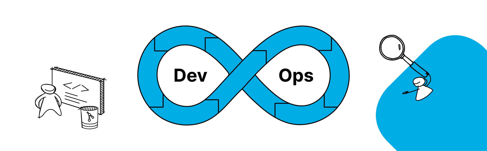

www.linkedin.com/in/chandrashekhar-patil
www.linkedin.com/in/chandrashekhar-patil  https://github.com/shekharpatil777
https://github.com/shekharpatil777  instagram
instagram
About Me
I'm a passionate DevOps Engineer with 3 years of hands-on work experience bridging the gap between development and operations. I thrive in dynamic environments, leveraging my expertise in Jenkins, CI/CD pipelines, Git, Ansible, AWS, and Kubernetes to automate workflows, build resilient infrastructure, and accelerate software delivery. My focus is on streamlining processes, enhancing collaboration, and driving continuous improvement through the DevOps lifecycle.
experience
-
Senior system engineer,Infosys
-Sept 2023 - Present Pune
• Successfully implemented CI/CD pipelines with rigorous security checks and automated compliance audits, reducing deployment time by 30% for a major bank's core banking system •optimized resources used in AWS and less execution time of build leading to significantly less AWS cost. •ensured timely service upgrades for environments are done and automated tasks by using Ansible to reduce manual workon
system engineer,Infosys
•Sept 2021 - sept 2023
• created Jenkins jobs as per the requirement of the project with all configuration and Ansible code to automate the build pipeline. December 2021 - September 2023 pune • created and implemented cronjobs for scheduled tasks reducing time consumed and avoided repetitive tasks. • Java, Kubernetes,Ansible, docker,aws and DevOps
Skills
-
Cloud Platforms
AWS Cloud Practioner certified
Credential ID: LQT0MRQCV1RQQ49S
skills: Ansible,docker, python,kubernetes,maven,jenkins,cicd
Education
Bachelor of Computer Engineering
University of Pune •India •2021 •7.28 cgpa
social work
National service Scheme (NSS)
while serving in NSS i have contributed in various government led community service activities & programmes.

Portfolio
Automated Deployment Pipeline for microservices
The pipeline will streamline the workflow from code commit to production deployment, ensuring efficiency, reliability, and faster release cycles.
Tech used here are git,jenkins,docker,kubernetes,Ansible,dockerhub,Grafana,AWS
Infrastructure as Code for production infrastructure using Terraform
• Automated infrastructure management that helped us to free up IT resources for higher-level tasks. •terraform configurations were useful to rebuild infrastructure quickly in case of disasterv